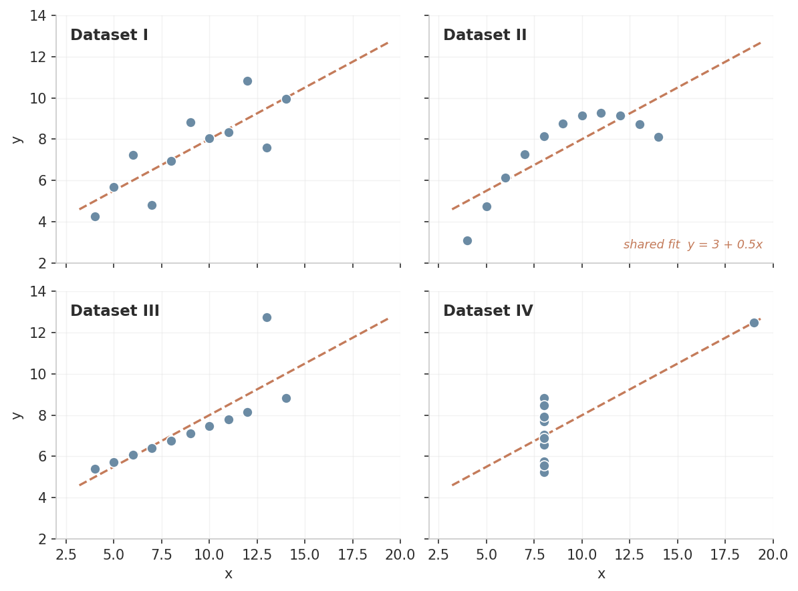
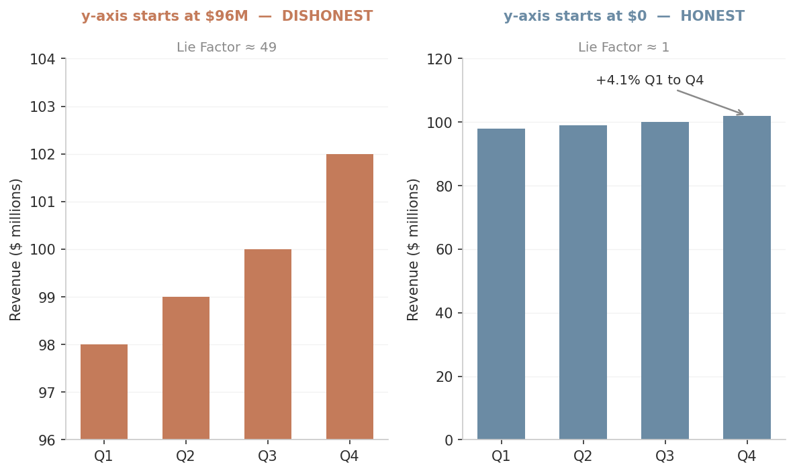
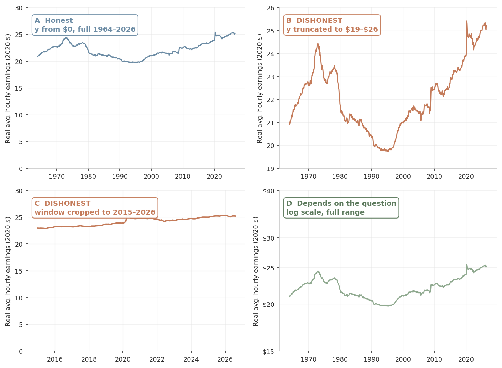
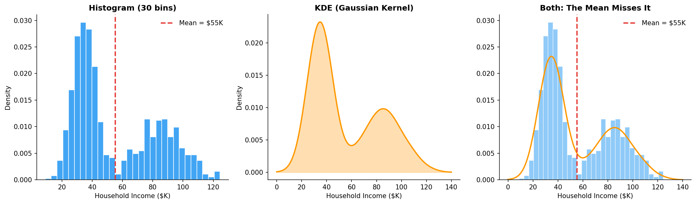

Option B is the "CLT reflex" — n>30 is about sampling distributions of the mean, not data shape. Option D is tempting but Anscombe's datasets are not normal.
ECON 3916 • Data Science for Economists • Chapter 3
Dr. Richeng Piao
Department of Economics
Northeastern University
3.1
Explain why summary statistics alone are insufficient , using Anscombe's Quartet
3.2
Calculate the Data-Ink Ratio and Lie Factor for a visualization
3.3
Diagnose common visualization deceptions: truncated axes, dual-axis distortion, cherry-picked windows
3.4
Evaluate whether a published economic visualization accurately represents its data
From Chapters 1 & 2 — 2 minutes
What are the three data structures from Chapter 1?
You deflated 50 years of wages in Chapter 2. What did real wages actually do?
You presented that result as a chart. But could the chart itself mislead?
November 2024: A county-level election map flooded social media. Red dominated.
The problem: geographic area ≠ population.
Los Angeles County (one blue speck) held more voters than the twelve largest red counties combined.
Standard County Map
🗺️
Area = Land
Population Cartogram
📊
Area = Voters
Every visualization is a product of design decisions
Today: how to measure how honest a chart is — and how to build honest ones
Section 1
Anscombe's Quartet & the Datasaurus Dozen
Francis Anscombe (1973) constructed four datasets with identical :
$\bar{x} = 9.0$
Mean of x
$\bar{y} = 7.5$
Mean of y
$r = 0.816$
Correlation
$y = 3 + 0.5x$
Regression line
Are these the same dataset?

The numbers lie by omission. The plot reveals what the numbers hide.
Household Income & Spending
$r = 0.72$ suggests a strong linear fit. But a scatter plot reveals two clusters : low-income (steep slope) and high-income (flat slope). A single OLS line is meaningless.
Unemployment & Participation
2010–2019: Unemployment fell 9.6% → 3.5%. But labor force participation also fell . Millions stopped looking. One metric hides true labor market slack.
Common Misconception: "I computed the mean, SD, and correlation — I understand my data." These capture center, spread, and linear association. They say nothing about clusters, non-linearities, or outliers.
If two datasets have the same mean, SD, and Pearson correlation, can you conclude they have the same distribution shape?
A
Yes, always — three statistics fully describe the data
B
Yes, if $n > 30$
C
No — Anscombe's Quartet proves otherwise
D
Only if both are normally distributed
Answer: C. Option B is the "CLT reflex" — n>30 is about sampling distributions of the mean, not data shape. Option D is tempting but Anscombe's datasets are not normal.
Option B is the "CLT reflex" — n>30 is about sampling distributions of the mean, not data shape. Option D is tempting but Anscombe's datasets are not normal.
Section 2
The Grammar of Honest Charts
$$\text{Data-Ink Ratio} = \frac{\text{Data Ink}}{\text{Total Ink Used in Graphic}}$$
Data Ink
Points, bars, lines — elements that represent data
Total Ink
Everything: gridlines, borders, fills, shadows, 3D effects
Target
Ratio near 1.0 — every element carries information
Tufte's prescription: erase non-data elements. Remove gridlines, borders, 3D effects. What remains should be data and nothing else.
$$\text{Lie Factor} = \frac{\text{Size of Effect Shown in Graphic}}{\text{Size of Effect in Data}}$$
= 1.0
Honest
> 1.5
Meaningful exaggeration
> 5.0
Serious distortion
Quarterly revenue: Q1 = $98M, Q2 = $99M, Q3 = $100M, Q4 = $102M

Data effect: $(102 - 98) / 98 = 4.1\%$ | Visual effect: Bar triples in height $\approx 200\%$ | Lie Factor: $200\% / 4.1\% \approx$ 49
A CEO presents the truncated revenue chart (LF = 49) to investors. A securities regulator reviews the same presentation.
Is this chart dishonest? What if the CFO adds a footnote: "Y-axis begins at $96M"?
Think (90 sec)
Write your position
Pair (2 min)
Compare with neighbor
Share (90 sec)
Best arguments to class
Section 2b
How Charts Lie — Systematically
1
Truncated Y-Axis
Starting above zero makes small differences look enormous. Most common source of high Lie Factors.
2
Dual Y-Axes
Two independent scales on one chart. Scaling each axis makes any correlation appear or disappear.
3
Cherry-Picked Time Window
Show 2020–2024 for a metric that crashed in 2019 — the crash disappears. The window is a framing decision.
4
Area Encoding
Circle with 2× radius = 4× area. Bubble charts systematically exaggerate differences.
5
Metric Mislabeling
FT chart: "Hires per month" dropped below zero — impossible for a count. Data was actually net employment change. The geometry was fine; the label lied.
6
Missing Context
No uncertainty bands, omitted data revisions, no baseline comparisons. Technically correct, contextually misleading.
March 2025: MA State Auditor revealed MBTA's public dashboards showed acceptable on-time metrics .
But the agency failed to maintain logs for repairs, ADA compliance, and snow removal.
Result: $3.3M in uncollected penalties from Keolis (2020–2023).
Goodhart's Law (Ch 2)
"When a measure becomes a target, it ceases to be a good measure."
The dashboard metric became the accountability target. The un-dashboarded data degraded.
A chart shows a stock index from March 2020 (COVID trough) to 2024, displaying dramatic growth. Y-axis starts at zero.
A
Truncated y-axis
B
Cherry-picked time window
C
Dual y-axes
D
Area encoding
Answer: B. The y-axis starts at zero. The deception is in the frame , not the drawing . Always ask: "What happened before this window opens?"
Section 3
Redesigning the Chapter 2 Wage Chart

A: Honest
B: Truncated
C: Cherry-Picked
D: Log Scale
Name a variable where starting the y-axis at zero wastes space .
What's the test for whether truncation is honest or misleading?
🌡️
Body temp: 97–104°F
Starting at 0 wastes 97%
📈
Interest rates: 3–5%
Reasonable if disclosed
✅
The test: Does truncation make a small change appear large ?
Rule: If Lie Factor > 2.0, annotate: "Y-axis does not start at zero." Transparency is the minimum standard.
Section 4
Four Steps Before Any Model
Run this before any modeling — Ch 12 through Ch 19 and beyond.
1. Structure
Rows, columns, types. Is it tidy?
df.shape, df.dtypes, df.head()
2. Distributions
Normal? Skewed? Bimodal?
df.hist(), sns.kdeplot()
3. Relationships
Correlations? Non-linearities?
sns.pairplot(), df.corr()
4. Anomalies
Outliers? Impossible values? Duplicates?
df.describe(), box plots
Mean = $55K. Describes almost nobody.

Two modes at ~$35K and ~$85K . The mean sits in the valley. A single OLS line would be meaningless.
You'll explore this in today's lab with World Bank GDP data.
Wrap-Up
1. Always Plot First
Anscombe's Quartet: identical stats can hide radically different data. Summary statistics compress away structure.
2. Data-Ink Ratio
Maximize chart efficiency. Delete gridlines, borders, 3D effects. What remains should be data and nothing else.
3. Lie Factor
Visual effect / Data effect. Near 1.0 = honest. LF of 49 = a 4% change looks 50× bigger.
4. Three Chart Decisions
What to show, how to encode, what to omit. Interrogate all three before trusting any chart.
5. EDA is a Systematic Workflow: Structure → Distributions → Relationships → Anomalies
Before next class, find a published economic visualization with a Lie Factor > 2.0.
Bring: (1) a screenshot, (2) your Lie Factor calculation, (3) a proposed honest redesign.
🎨
WTF Visualizations
wtfviz.net
📊
Junk Charts Blog
junkcharts.typepad.com
💼
Corporate Earnings
Any investor deck